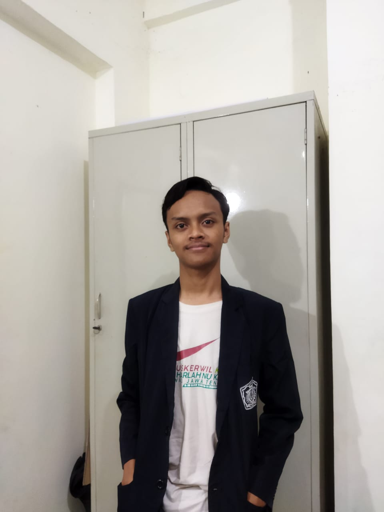

Tentang Saya
Halo !, namaku Muhammad Ahyun Irsyada,aku Lahir pada Selasa,30 September 2003,aku lahir dan di besarkan di Demak,aku adalah mahasiswa departemen Teknik Informatika ITS angkatan 2021.Aku memiliki beberapa hobi diantaranya adalah bermain game,menonton Anime,bermain tenis meja,dan menggambar.Asal sekolahku adalah Yayasan Pondok Pesantren Raudhotul Ulum Guyangan,Aku masuk ITS lewat jalur Kemitraan dengan Kementrian agama,Kesibukan ku sehari hari adalah kuliah,menjadi panitia Schematic,menjadi staff ukhwah KMi,menjadi skertaris di Pondok Pesantren Darussalam Keputih,anggota dari CSSMoRA ITS,dan aku juga memegang data base Smart Santri Digital di PPDS
MINDSET
Berusahalah sebaik mungkin,setiap usaha pasti ada hasil, tapi usaha itu akan sia sia kalau tidak di sertai dengan doa kepada tuhan yang maha kuasa
Cita Cita
Cita-citaku saat aku kecil adalah menjadi presiden namun,setelah aku masuk MTS cita cita ku tiba tiba berubah menjadi guru,namun saat aku MTS tahun terakhir dan masuk MA aku pun mengenal game dan pada akhinya cita cita ku adalah menjadi Game devoloper,lalu saat MA tahun pertengahan cita cita ku bertambah menjadi Ilustrator gambar sekaligus game developer,namun setelah mengenal dunia pernovelan cita cita ku bertambah lagi yang awalnya cuma game developer dan Ilustrator gambar bertambah menjadi game developer,ilustrator,dan penulis cerita,dan sampai sekarang cita cita ku adalah game developer,ilustrator,dan pengarang cerita
Skill SET
- HTML
- CSS
- C
- C++
- Menggambar ilustrasi
- Tata bahasa Arab
toolset
- canva
- VS code
- Eclipse IDE
- code block
- Draw.io
- Ibis paint x
Kontak
Email: irsyadahebat@email.com
Telepon: 085105124257
Alamat: Girikusuma 05 03 Banyumeneng Mranggen Demak